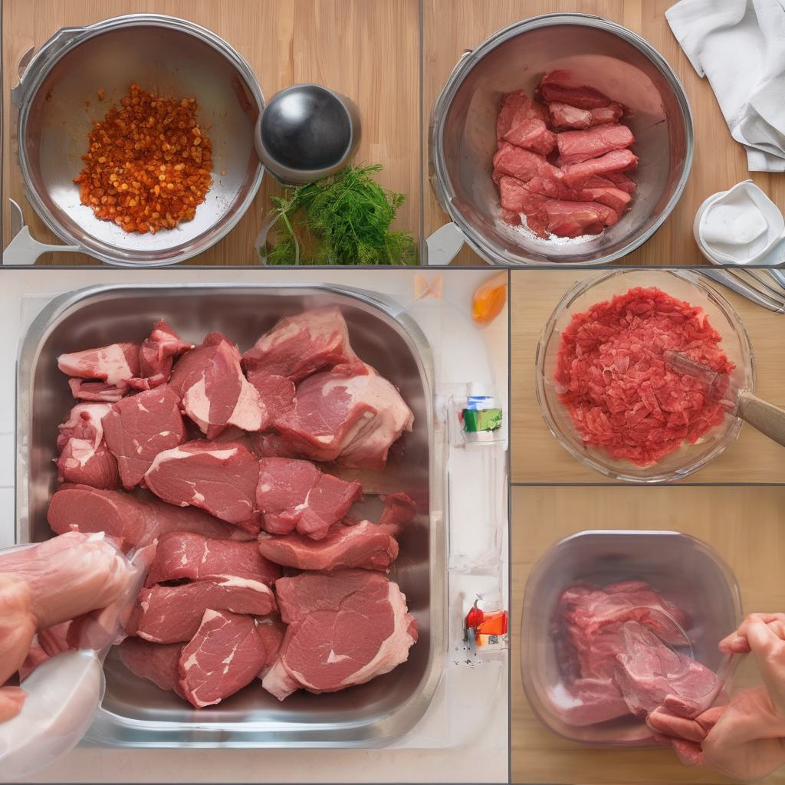
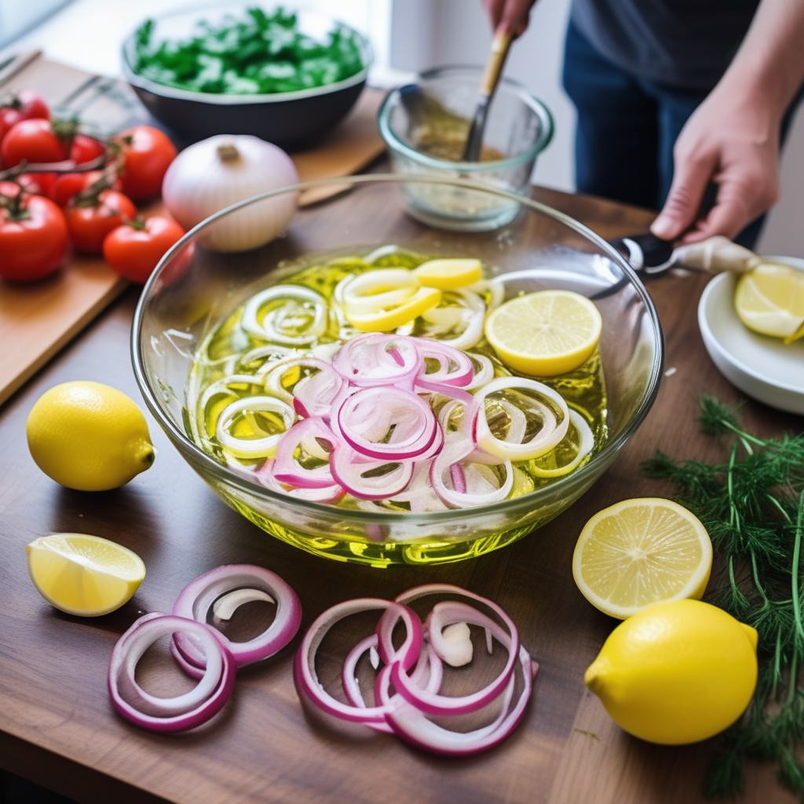
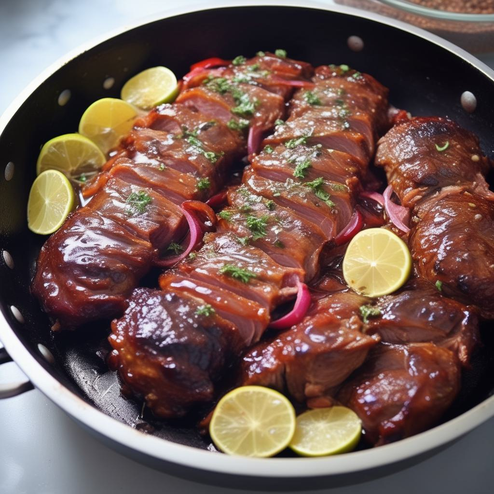
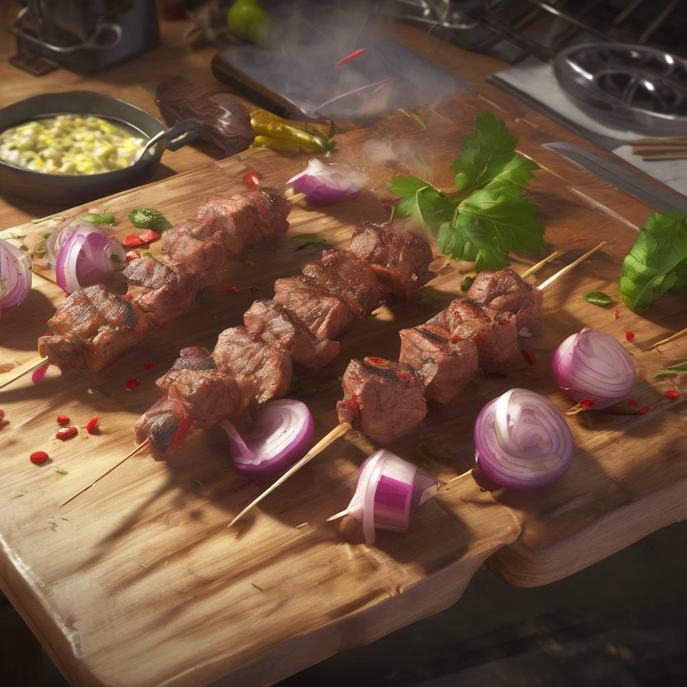
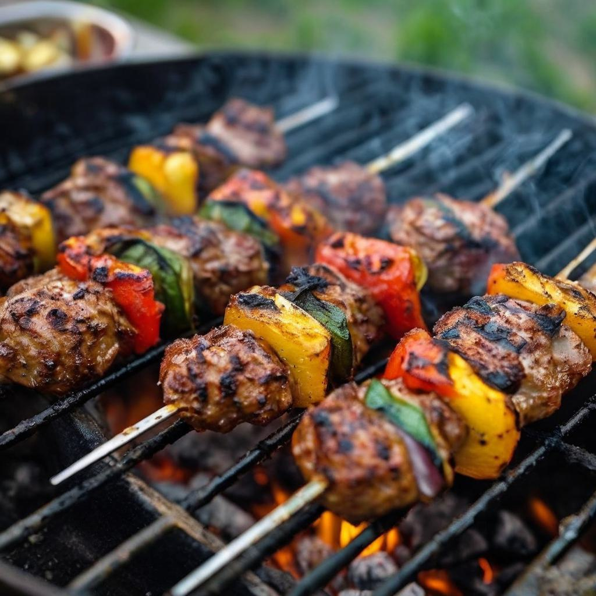

- ### Шаг 1: Подготовка мяса
1. Нарежьте мясо на куски примерно 2-3 см в размере.
2. Положите мясо в глубокую миску или контейнер для маринада.

- ### Шаг 2: Приготовление маринада
1. Очистите лук и нарежьте его кольцами или полукольцами.
2. В большой чашке смешайте масло, соль, перец, лимонный сок и добавьте нарезанный лук.

- ### Шаг 3: Маринование мяса
1. Перемешайте маринад, чтобы все ингредиенты хорошо смешались.
2. Налейте маринад на нарезанное мясо, хорошо перемешайте, чтобы каждый кусок мяса покрылся маринадом.
3. Поставьте миску с мясом в холодильник и оставьте на несколько часов или лучше на ночь для наилучшего впитывания вкуса.

- ### Шаг 4: Приготовление шашлыка
1. Нанизывайте мясо на шампуры, чередуя с кусочками лука.
2. Если хотите, добавьте на шампуры лавровый лист и перец горошком для аромата.

- ### Шаг 5: Жарка шашлыка
1. Разогрейте гриль или угли до высокой температуры.
2. Выложите шашлыки на гриль и жарьте до готовности, периодически переворачивая, пока мясо не станет золотисто-коричневым с обеих сторон.
- ### Готово!
Подавайте шашлык горячим с овощным салатом, зеленью и соусом на ваш выбор.